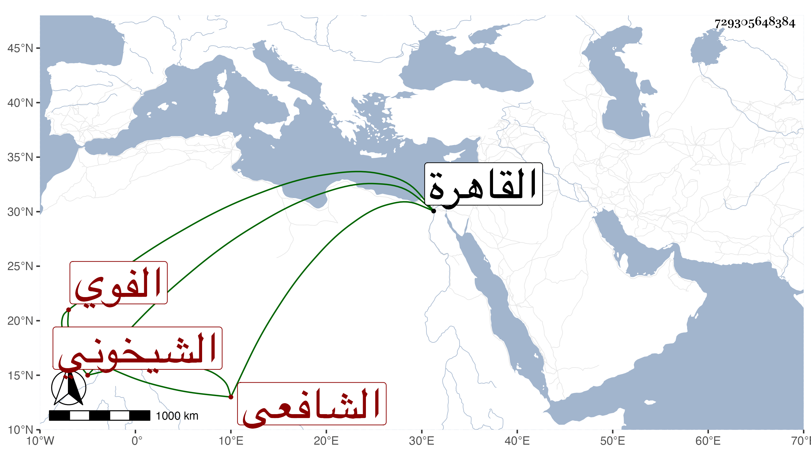

0902Sakhawi.DawLamic.ITO20230111-ara1.EIS1600.729305648384
Biography ID: 729305648384
49
محمد بن علي بن محمد بن عبد الكريم الشمس بن النور الفوي الشيخوني الشافعي الماضي أبوه . ولد سنة خمس وثمانين وسبعمائة تقريبا أو قبلها بقليل بالقاهرة ونشأ فحفظ القرآن وتلابه لأبي عمرو وحفص على الغماري وغيره وأخذ في الفقه عن أبيه وغيره وأسمعه علي ابن أبي المجد والنجم بن الكشك والتنوخي وابن الشيخة والمطرز والأبناسي والعراقي وابنه الولي والهيثمي والغماري والجوهري والنجم البالسي والبرشنسي وابن الكويك في آخرين وأجاز له جماعة ، وحدث باليسير سمع منه الفضلاء ، وحج في أول القرن سمعت عليه وكان من قدماء صوفية الشيخونية ومنزلا في جهات مع تكسبه من الشهادة أيضا . مات في يوم الخميس ثامن عشري صفر سنة ستين رحمه الله وإيانا .
